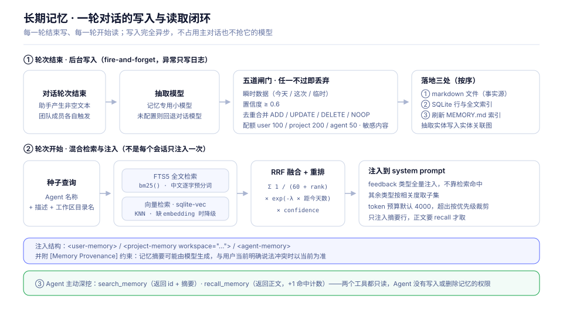
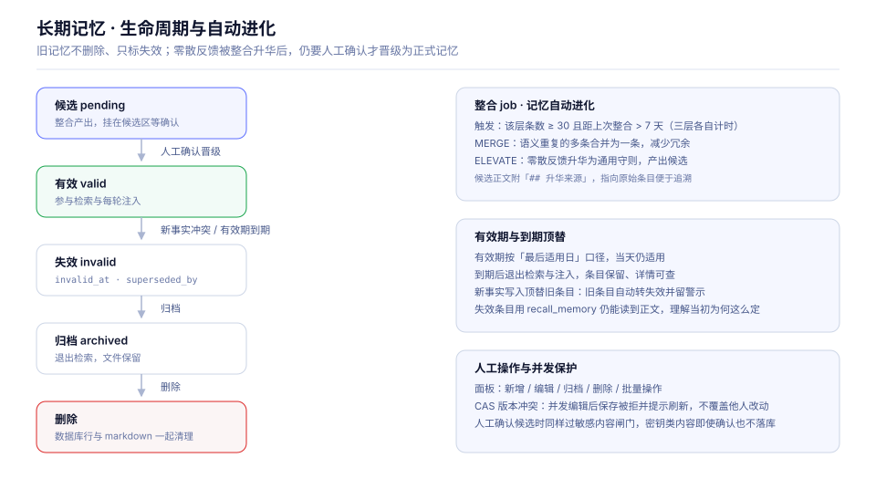
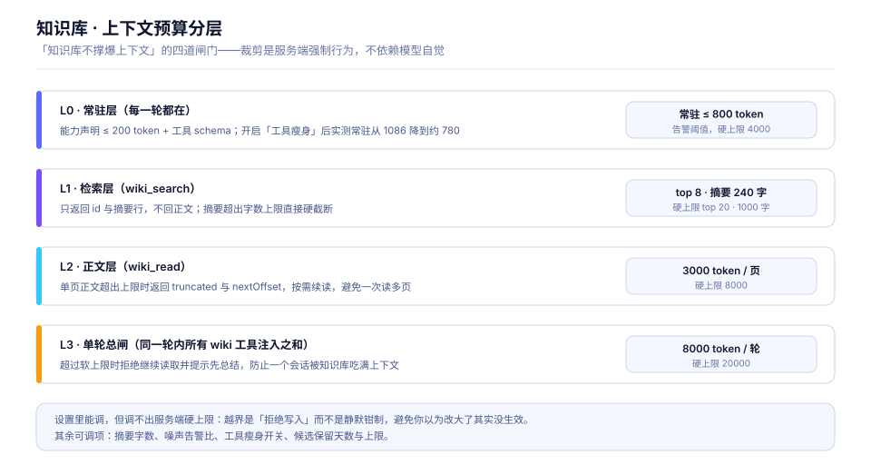
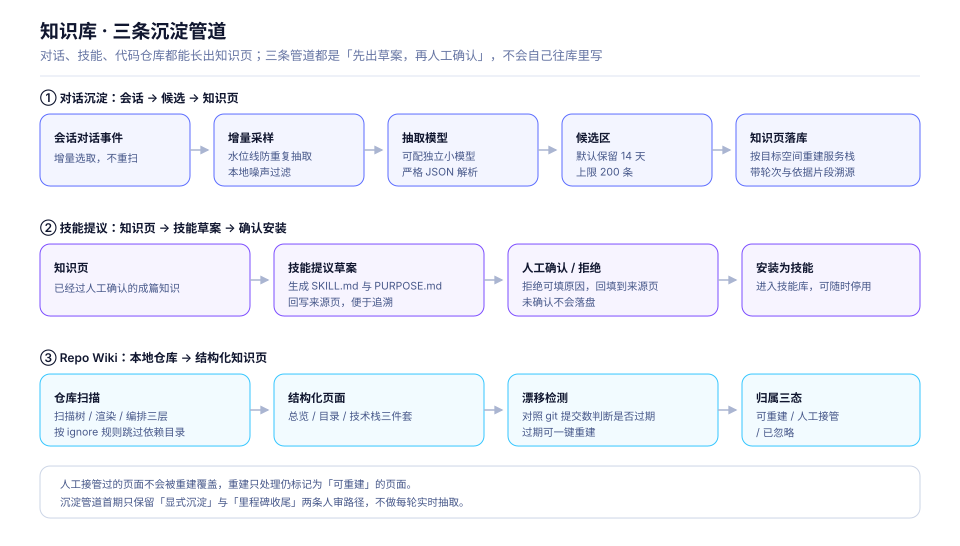
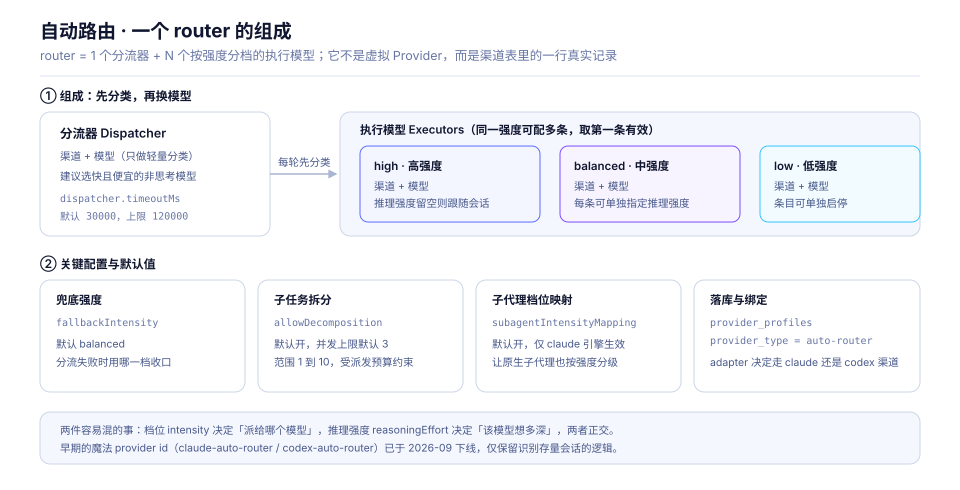
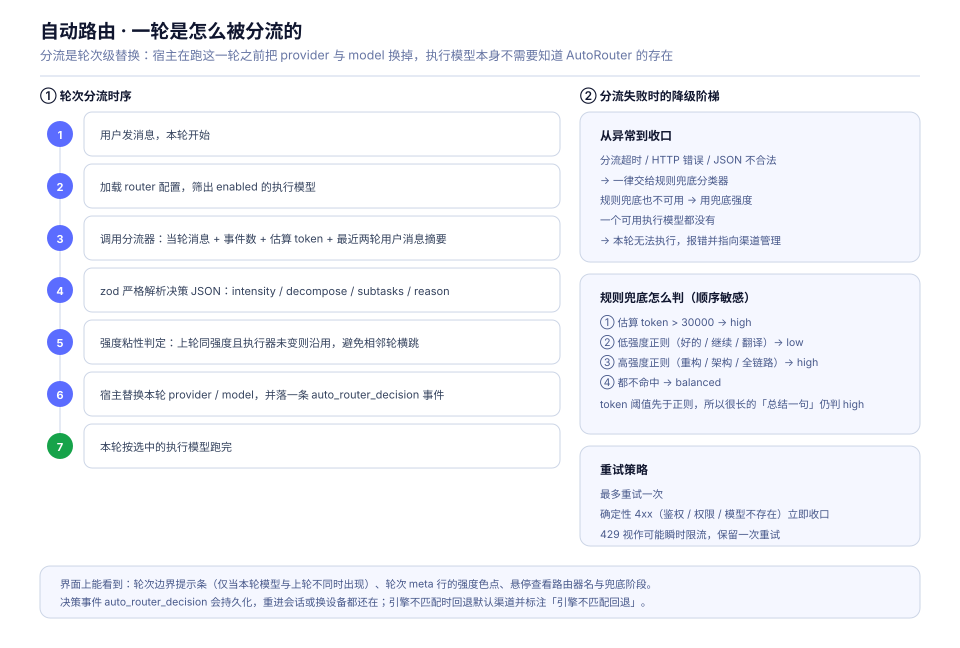
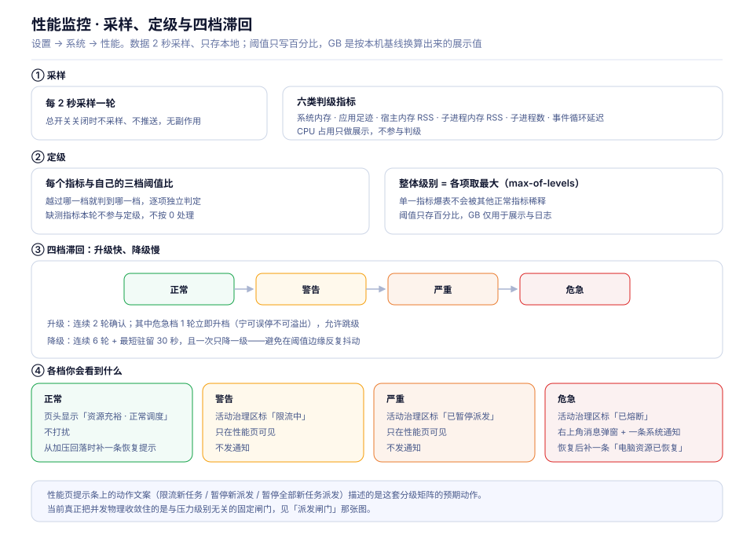
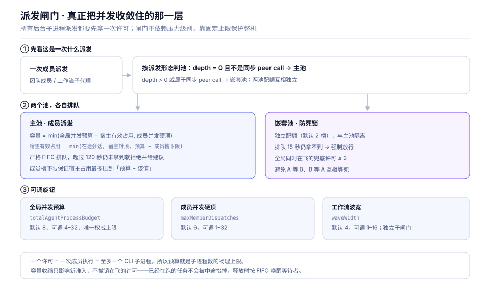
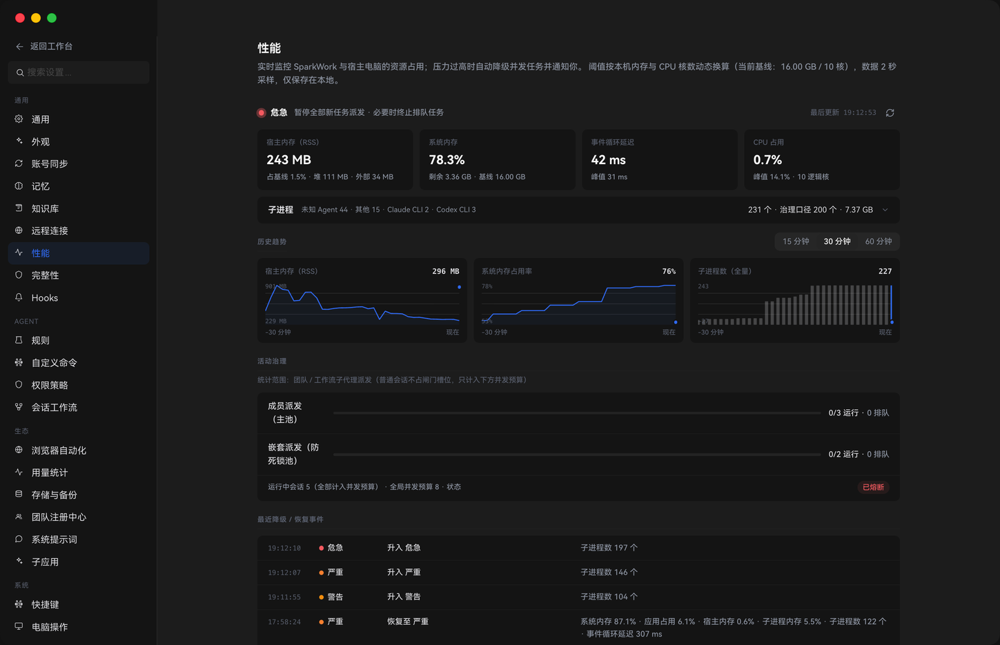

四条能力线：记住、查得到、花得值、跑得稳。
SparkWork 把 Agent 的“记忆”拆成三条互相独立的线：长期记忆回答“它记得你”，知识库回答“它读得懂你的资料”，自动路由回答“这轮该花多少成本”，而性能保护回答“后台任务再多也别把电脑拖死”。
一、长期记忆：每轮写、每轮读
记忆以 markdown 文件为事实来源、以本地 SQLite 为索引。写入发生在 每一轮对话结束之后（异步、失败只写日志，不影响主对话），注入发生在 每一轮对话开始之前（不是每个会话只注入一次）。


三个必须知道的事实
-
三层作用域：
user跨项目共享、project跟随工作区（正文落在仓库目录里）、agent按角色隔离。三者互不可见。 - 五道写入闸门：瞬时数据、置信度低于 0.6、去重合并判定、超配额、命中敏感内容，任一不过即丢弃，不落盘也不建索引。
- Agent 没有写记忆的工具：记忆写入只来自后台抽取，增删改只在「设置 → Agent → 记忆」面板里由人完成，避免 Agent 把临时信息固化成长期事实。
二、知识库：零预注入，按预算取用
知识库把方案、教程和踩坑记录写成可检索、可双链、可回看版本的页面。它和记忆最大的差别是 零预注入：知识库内容从不进常驻上下文，Agent 必须先检索、再按需读取。


写入与读取的边界
| 面向 | 共 12 个工具（mcp__spark_wiki__） |
是否走审批 |
|---|---|---|
| 只读 |
wiki_list_spaces · wiki_search · wiki_read ·
wiki_list · wiki_backlinks
|
免审批 |
| 写入 |
wiki_write · wiki_update · wiki_archive ·
wiki_delete · wiki_restore · wiki_link
|
走 canUseTool |
| 技能提议 | wiki_propose_skill |
产出草案，仍需人工确认 |
所有写入收敛到同一套写入原语：expectedVersion CAS 乐观锁、正文先写临时文件再
rename 原子落盘、FTS 与主表同事务、失败回滚，回执带 indexReady。
三、自动路由：轮次级替换模型
一个 router 由 1 个分流器 + N 个按强度分档的执行模型 组成。分流不发生在本轮运行过程中，而是 在轮次开始前由宿主把 provider 与 model 换掉，所以执行模型本身不需要知道 AutoRouter 存在。


降级与兜底
-
timeout/http/schema三类失败统一走 规则兜底分类器：先看估算 token（> 30000 直接 high），再匹配高低强度正则，都不命中则balanced。 - 重试最多一次：确定性 4xx（鉴权、权限、模型不存在、请求非法）立即收口，429 视作可能瞬时限流保留一次重试。
-
adapter与会话引擎不一致时回退默认渠道并标注adapterMismatch，存量会话换引擎后不会突然跑不动。
四、性能保护：四档分级 + 双池闸门
这一节解决的是另一类问题：不是「Agent 会不会做错」，而是整机被后台子进程拖到失去响应。它由两个互相独立的部分组成——资源监控负责观测与分级，派发闸门负责把并发真正收敛住。



三个必须守住的边界
- 阈值不写死绝对值：配置与持久化里只有百分比与核数推导系数，运行时按宿主机规格基线（总内存 + CPU 核数）换算出 GB 等价值，判定以百分比直比为准，字节数只用于展示与日志。
- 只有危急档会打扰你：warning / critical 完全静默（状态在性能页可查），emergency 才弹一条右上角消息 + 一条系统通知，完全恢复时补一条；页面挂载前已发生的级别不补发。
- 闸门不依赖压力级别：级别已由装配层灌进闸门（含监控晚于闸门创建时的补灌），但闸门内目前只记录档位、不参与准入判定——真正在保护整机的是与压力级别无关的固定双池并发上限。所以活动治理区的「限流中 / 已暂停派发 / 已熔断」是状态呈现，不是已执行的限流动作。
四条能力线的代码落点
| 能力 | 服务与协议 | 存储 |
|---|---|---|
| 长期记忆 | packages/agent-runtime（记忆服务与工具） |
markdown 事实源 + memory_entry / memory_fts /
memory_vec / memory_entity（迁移 107–110）
|
| 知识库 |
packages/agent-runtime/src/services/wiki；
packages/protocol/src/wiki*.ts
|
markdown 正文 + wiki_space / wiki_page /
wiki_link / wiki_revision / wiki_fts /
wiki_candidate（迁移 112–114）
|
| 自动路由 |
packages/protocol/src/auto-router-config.ts；会话执行路径的分流编排
|
provider_profiles（provider_type = auto-router）+
auto_router_decision 事件
|
| 性能保护 |
packages/agent-runtime 的 resource-monitor（采样与判级）与
dispatch-governor（双池并发闸门）
|
resource_pressure_events（迁移 103，保留 7 天）+ 分钟级指标的内存环形缓冲（默认不落库）
|
容易混淆的边界
记忆 vs 知识库
- 记忆每轮自动注入摘要；知识库零预注入，要检索才进来。
- 记忆粒度是一条事实；知识库粒度是一篇成体系的知识页。
- 记忆 Agent 只读；知识库 Agent 可写但走审批。
- 判断标准：几乎每轮都该知道的放记忆，需要时去查的放知识库。
档位 vs 推理强度
- 强度档位（
intensity）决定派给哪个执行模型。 - 推理强度（
reasoningEffort）决定该模型想多深。 - 两者正交：low 档也可以开高推理强度。
- 分流决策是轮次级的，改配置影响下一轮而不是正在跑的这轮。
档位标记 vs 真实限流
- 活动治理区的「限流中 / 已暂停派发 / 已熔断」由当前压力级别推导，是状态呈现。
- 闸门目前不会按档位拒绝准入，
setPressureLevel只记录档位。 - 真正让任务排队的是固定的并发上限：全局并发预算、成员并发硬顶、嵌套池配额。
- 需要立刻限流：直接调小全局并发预算或成员并发硬顶，热更新即时生效。
主池 vs 嵌套池
- 主池：
depth = 0且不是同步 peer call 的成员派发，严格 FIFO，超时 120 秒拒绝。 - 嵌套池：
depth > 0或同步 peer call，独立配额，15 秒兜底放行防死锁。 - 宿主会话不占池槽位，但会被计入主池预算（有封顶与成员槽下限保护）。
- 一个许可 = 一次成员执行 = 至多一个 CLI 子进程。
面向使用者的完整说明见 官网文档中心；本页只描述当前已经存在的机制与边界。